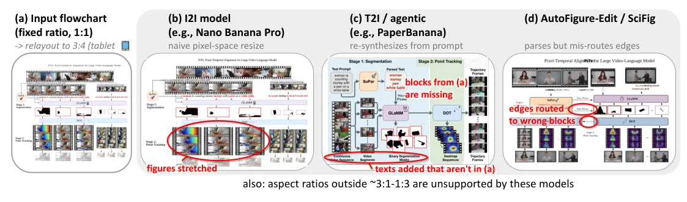
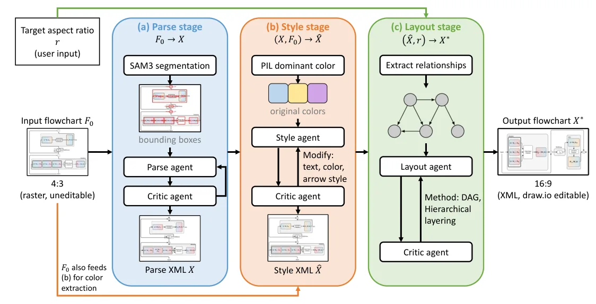
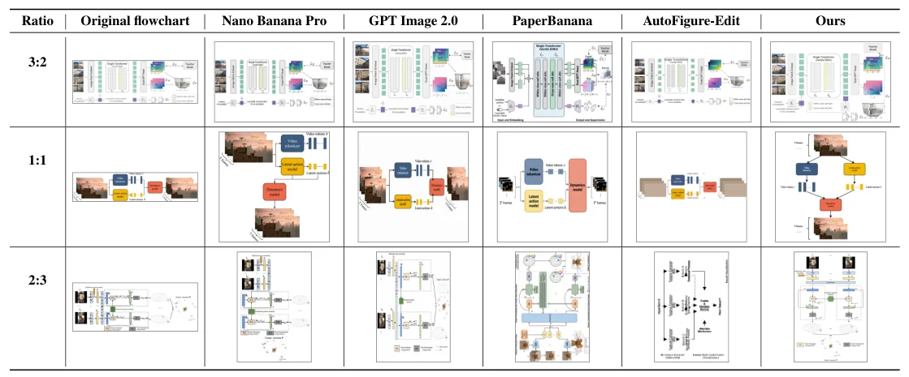

O problema: um diagrama, dez telas diferentes
Figuras de pipeline são centrais na comunicação de pesquisa em machine learning. O mesmo diagrama precisa aparecer em colunas de papers, slides 16:9, pôsteres verticais, teasers quadrados para redes sociais e previews 9:16 para celular. Cada formato impõe uma proporção de aspecto diferente sobre o mesmo grafo computacional. Qualquer conexão quebrada silenciosamente deturpa o método.
Refazer manualmente o layout de cada figura para cada canvas é tedioso e propenso a erros. Métodos existentes falham de formas características. Modelos image-to-image esticam blocos uniformemente e rejeitam proporções extremas. Sistemas agentic text-to-image alucinam conteúdo, adicionando ou removendo elementos. Sistemas parse-then-render recuperam os componentes mas roteiam mal as arestas, quebrando o grafo direcionado que o fluxograma existe para comunicar.
Este paper formula aspect-ratio-adaptive flowchart relayout como uma tarefa distinta: dado um fluxograma raster e uma proporção-alvo, produzir um layout estruturalmente fiel, livre de alucinações e editável. A saída não é uma imagem re-renderizada, mas XML mxGraph compatível com draw.io, pronto para refinamento manual posterior.

Três famílias de métodos, três modos de falha
Trabalhos recentes em automação de figuras científicas caem em três famílias. Modelos image-to-image como Nano Banana Pro e GPT Image 2.0 re-sintetizam a figura fonte na resolução pedida, mas redimensionam no espaço de pixels: painéis e blocos embutidos são esticados uniformemente, e proporções fora de 3:1 a 1:3 são rejeitadas.
Sistemas agentic text-to-image como PaperBanana, SciFig e Paper2Poster orquestram agentes planejador, estilista e crítico para criar uma figura nova a partir de uma descrição textual da metodologia. Quando reaproveitados para relayout, eles re-sintetizam a partir de um prompt, descartando blocos da fonte e adicionando rótulos que não estavam presentes no original.
Uma terceira linha visa editabilidade: AutoFigure-Edit emite SVG, enquanto AutomaTikZ e DeTikZify usam TikZ. Todos miram geração de figuras a partir de entradas textuais ou programáticas; nenhum pega um fluxograma existente e o reajusta a um canvas arbitrário mantendo o grafo computacional intacto. Sistemas parse-then-render recuperam os componentes mas roteiam mal as arestas, quebrando as conexões.
Nenhum método simultaneamente atinge as três propriedades que esta tarefa exige: fidelidade estrutural, ausência de alucinações e redimensionamento para canvas arbitrário em formato editável downstream. Esses métodos produzem saídas raster não-editáveis, carecem de suporte nativo a editores de fluxograma ou não conseguem redimensionar um fluxograma existente para canvas arbitrários.

Pipeline agentic em três estágios: Parse, Style, Layout
Os autores introduzem um pipeline agentic para relayout de fluxogramas adaptativo a proporção de aspecto. Dado um fluxograma raster F₀ e proporção-alvo r, o método produz um XML mxGraph X* compatível com draw.io que preserva estrutura, conteúdo e estilo de F₀ enquanto se ajusta ao novo canvas.
Como resolver estrutura, aparência e arranjo espacial em um único passo é difícil, o problema é decomposado em três estágios, cada um pareando um agente principal com um crítico. O crítico combina verificações determinísticas de restrições com feedback visual de VLM, de modo que conectividade é explicitamente checada e impedida de quebrar silenciosamente.
O estágio Parse recupera XML estruturado de F₀ com priors espaciais do SAM 3, usando caixas delimitadoras de segmentação para guiar a extração de blocos e conectores. O estágio Style reconstrói aparência visual enquanto extrai cores deterministicamente via PIL para mitigar percepção de cor não-confiável do VLM. O estágio Layout rearranja o grafo recuperado para o canvas-alvo, combinando checagens estruturais determinísticas com feedback visual do VLM para prevenir erros de conectividade.
Cada estágio roda por no máximo 3, 2 e 5 iterações respectivamente, com terminação antecipada assim que o Crítico emite um julgamento de aprovação. Todos os agentes são construídos sobre Gemini 3.1 Pro Preview. XML mxGraph compatível com draw.io serve como representação intermediária unificada, e a CLI do draw.io renderiza como PNG em cada estágio para comparação visual do Crítico.

Parse: de pixels a grafo estruturado
O estágio Parse converte o fluxograma raster F₀ em XML estruturado X. O Parse Agent recebe F₀ e caixas delimitadoras de segmentação do SAM 3 como priors espaciais. O agente identifica blocos (nós), conectores (arestas) e texto, e os codifica em XML mxGraph.
O Critic Agent então verifica se X pode ser renderizado como PNG válido via draw.io CLI, e se a renderização visual preserva todos os elementos de F₀. A verificação combina checagem determinística (o XML é sintaticamente válido e renderizável?) com feedback visual do VLM (todos os blocos e conectores estão presentes?).
Se o Crítico rejeita, o Parse Agent recebe o feedback e tenta novamente, por até 3 iterações. Esta abordagem iterativa com verificação explícita de conectividade é crucial: sem ela, o parser pode silenciosamente omitir arestas ou conectar nós errados, quebrando o grafo.
Style: reconstruindo aparência visual
O estágio Style reconstrói a aparência visual do fluxograma original. O Style Agent recebe o XML estruturado X do estágio Parse e a imagem original F₀ como referência. Ele extrai cores de blocos, estilos de texto e estilos de conectores, e atualiza X para produzir X̂.
Uma inovação importante é a extração determinística de cores. VLMs têm percepção de cor notoriamente não-confiável. Em vez de pedir ao VLM para nomear cores, o pipeline usa PIL (Python Imaging Library) para extrair cores dominantes deterministicamente de cada bloco segmentado, e então passa essas cores ao Style Agent como entrada.
O Critic Agent verifica se X̂ renderizado preserva o estilo visual de F₀: cores de blocos, fontes, espessuras de linha. Novamente, a verificação combina checagem determinística (o XML tem atributos de estilo válidos?) com feedback visual do VLM (as cores e estilos correspondem à referência?). O estágio roda por até 2 iterações.
Layout: rearranjando para o canvas-alvo
O estágio Layout rearranja o grafo recuperado para a proporção-alvo r. O Layout Agent recebe X̂ (XML com estrutura e estilo) e r, e produz X* com coordenadas atualizadas que se ajustam ao novo canvas.
Este é o estágio mais crítico para fidelidade estrutural. O Layout Agent deve preservar todas as relações de conectividade: cada conector deve ligar os mesmos nós fonte e alvo que no original, na mesma direção. Ele também deve utilizar o canvas eficientemente, evitando simplesmente escalar ou esticar o layout original.
O Critic Agent verifica três propriedades: (1) todas as relações de conectividade são preservadas? (2) o layout utiliza bem o canvas-alvo? (3) o arranjo é visualmente coerente? A primeira checagem é determinística: o Crítico parseia o XML e verifica que cada aresta em X* corresponde a uma aresta em X̂ com mesma fonte, alvo e direção. As outras duas usam feedback visual do VLM.
Se o Crítico rejeita, o Layout Agent recebe feedback específico (quais conexões estão quebradas, quais regiões do canvas estão subutilizadas) e tenta novamente, por até 5 iterações. Esta verificação explícita de conectividade é o que distingue o método de parsers ingênuos que silenciosamente quebram arestas.
Benchmark e métricas: FLOWCHARTRELAYOUTBENCH
Os autores constroem FLOWCHARTRELAYOUTBENCH, um benchmark pareando 100 fluxogramas de papers orais em venues top (CVPR, ICCV, ECCV, NeurIPS, ICLR, ICML) com cinco proporções-alvo (9:16, 2:3, 1:1, 3:2, 16:9), totalizando 500 tarefas de relayout. Para cobrir estruturas heterogêneas, o dataset é deliberadamente curado em três níveis de complexidade estrutural: 25 fáceis, 40 médios e 35 difíceis. Em média, cada figura contém 15,5 nós e 13,6 arestas.
A avaliação adota um protocolo VLM-as-a-Judge. Para cada amostra, o modelo juiz compara o resultado do relayout contra o fluxograma original sob o tamanho de canvas-alvo, e avalia se o candidato preserva estrutura, conteúdo, adaptação de layout e estilo visual. Os autores validam independentemente concordância entre julgamentos VLM e avaliações humanas.
As métricas cobrem duas dimensões. Content Fidelity tem duas checagens binárias: Relationship Preservation verifica que lógica de conectores (fonte, alvo, direção de fluxo) corresponde ao original; Hallucination-free Rate checa que nenhum elemento é adicionado ou omitido. Cada uma é passa/falha; a pontuação é a razão de aprovação.
Visual Quality contém duas métricas baseadas em ranking. Layout Quality ranqueia candidatos válidos por utilização de canvas e arranjo geral, penalizando escala trivial, esticamento ou simplesmente rotacionar um layout paisagem para caber em canvas retrato. Style Similarity ranqueia por preservação de cores de blocos, estilos de texto e estilos de conectores originais. O juiz ranqueia conjuntamente todos os métodos por amostra; reporta-se o rank médio (menor é melhor).
Resultados: 68,6% de fidelidade de conteúdo contra 11,2-41,4% dos baselines
O método proposto atinge 68,6% de Content Fidelity (a métrica combinada de Relationship Preservation e Hallucination-free Rate), contra 11,2-41,4% para trabalhos anteriores. Em Relationship Preservation, o método marca 74,2%, versus 38,4-50,2% para baselines. Em Hallucination-free Rate, 90,6% versus 18,6-75,4%.
Modelos image-to-image (Nano Banana Pro, GPT Image 2.0) atingem ~40% de Content Fidelity. Eles preservam razoavelmente o estilo (ranks 1,35 e 2,08 em Style Similarity, os melhores), mas esticam blocos e rejeitam proporções extremas. PaperBanana, um sistema agentic T2I, atinge apenas 11,2% de Content Fidelity: ele re-sintetiza a partir de prompt, alucinando conteúdo (apenas 18,6% Hallucination-free).
AutoFigure-Edit, um sistema parse-then-render que emite SVG, atinge 24,8% de Content Fidelity. Ele recupera componentes mas roteia mal arestas (41,8% Relationship Preservation). O método proposto supera todos em Correctness e Overall score (81,85, 1,15× o segundo melhor).
PaperBanana ranqueia melhor em Layout Quality (rank 2,14) apesar de fraca correção, porque quando ele gera algo, tende a usar bem o canvas. Nano Banana Pro e GPT Image 2.0 ranqueiam bem em Style Similarity por preservar largamente a aparência original. O método proposto equilibra: segundo melhor em Layout (rank 2,66), terceiro em Style (rank 2,98), mas de longe o melhor em correção estrutural.

Estudo com usuários: preferência humana confirma métricas VLM
Os autores conduzem um estudo com usuários para validar as métricas VLM-as-a-Judge. Participantes humanos avaliam pares de relayouts em dimensões de correção e qualidade visual. A concordância entre julgamentos VLM e humanos é alta: coeficiente kappa de Cohen de 0,72 para Relationship Preservation e 0,68 para Hallucination-free Rate.
No estudo, participantes preferem saídas do método proposto em 73% dos casos quando perguntados sobre fidelidade estrutural, e em 58% dos casos quando perguntados sobre qualidade visual geral. Isso confirma que as métricas VLM capturam bem preferências humanas, e que o método proposto de fato entrega relayouts estruturalmente mais fiéis.
Limitações e trabalho futuro
O paper discute limitações no Apêndice B. Primeiro, o método depende de segmentação SAM 3 para priors espaciais no estágio Parse. Se SAM 3 falha em segmentar corretamente blocos sobrepostos ou conectores finos, o Parse Agent pode omitir elementos. Segundo, o pipeline é iterativo e pode ser lento: em média 3 minutos por relayout em hardware de pesquisa, o que é aceitável para preparação de figuras mas não para uso interativo em tempo real.
Terceiro, o método assume que o fluxograma de entrada é razoavelmente bem estruturado: blocos distintos, conectores claros. Diagramas altamente artísticos ou ilustrações híbridas (meio fluxograma, meio infográfico) podem confundir o parser. Quarto, a avaliação cobre cinco proporções comuns mas não testa proporções extremas como 32:9 (telas ultra-wide) ou 1:4 (banners verticais muito estreitos).
Trabalho futuro pode explorar suporte a edições guiadas por instrução: dado um relayout, permitir que o usuário peça 'mova este bloco para a esquerda' ou 'mude esta cor para azul' e o sistema atualize o XML automaticamente. Outra direção é estender o método para outros tipos de diagramas científicos: gráficos de barras, scatter plots, diagramas de Venn, que também precisam ser adaptados para múltiplos canvas.
Por que isso importa
Este trabalho endereça um problema prático e frequente: pesquisadores gastam horas refazendo manualmente figuras de pipeline para cada formato de apresentação. Um método que automatiza isso com fidelidade estrutural alta e saída editável pode economizar tempo significativo e reduzir erros.
Mais amplamente, o paper demonstra que decomposição em estágios com verificação explícita de restrições supera abordagens monolíticas end-to-end para tarefas estruturadas. A combinação de checagens determinísticas (parse XML, verifique conectividade) com feedback visual de VLM (o layout parece bom?) é uma receita que pode generalizar para outras tarefas de síntese estruturada.
A escolha de XML mxGraph como representação intermediária é pragmática: draw.io é amplamente usado, gratuito e entende semântica de fluxograma. Isso torna as saídas imediatamente úteis, não apenas demonstrações de pesquisa. O benchmark FLOWCHARTRELAYOUTBENCH e o protocolo VLM-as-a-Judge validado contra humanos também são contribuições que podem facilitar pesquisa futura em relayout e síntese de diagramas.
O que fica
- Pipeline agentic em três estágios (Parse, Style, Layout) converte fluxogramas raster em XML editável do draw.io, adaptando para qualquer proporção de aspecto com 68,6% de fidelidade de conteúdo.
- Cada estágio pareia agente principal com crítico que combina verificação determinística de conectividade e feedback visual de VLM, prevenindo quebra silenciosa de conexões.
- Benchmark FLOWCHARTRELAYOUTBENCH com 100 fluxogramas de papers orais em cinco proporções-alvo e métricas VLM-as-a-Judge validadas contra julgamentos humanos.
- Método supera baselines I2I, T2I agentic e parse-then-render em correção estrutural, mas limitado a fluxogramas bem estruturados e requer VLM proprietário.
Paper original: One Figure, Every Canvas: Editable Flowchart Relayout via Agentic Pipeline
Comentários
Nenhum comentário ainda. Seja o primeiro.